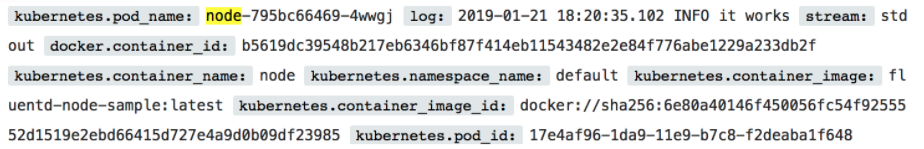
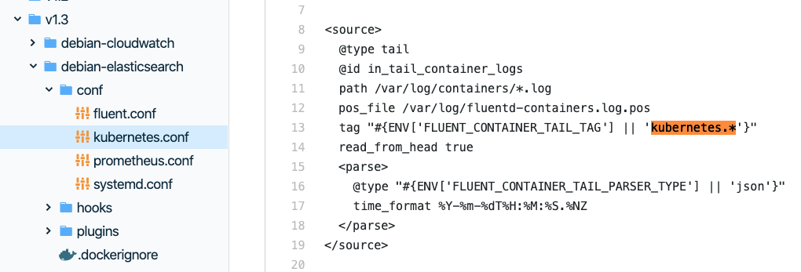
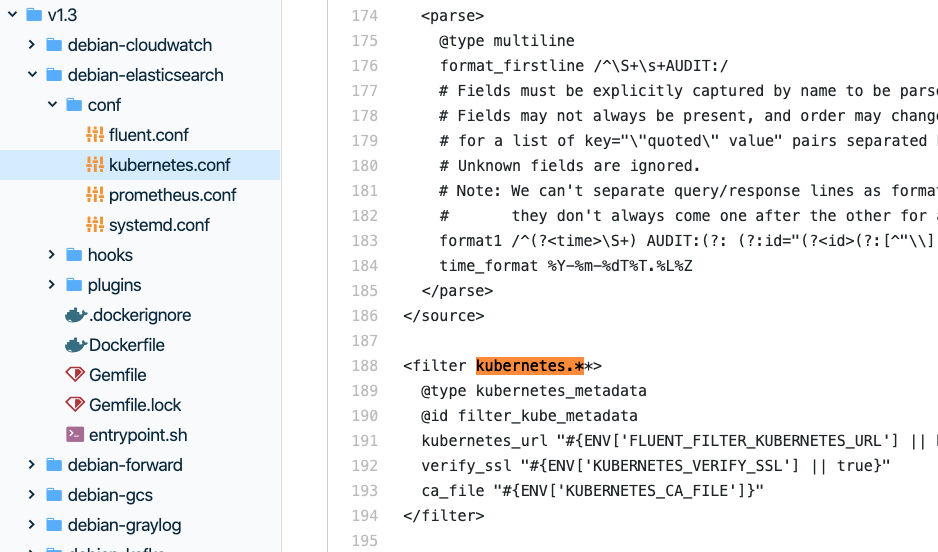
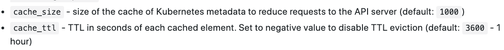

k8s 应用日志收集
k8s 日志收集架构
以下是比较一般、普适的架构。更多参考：Kubernetes 日志架构 https://kubernetes.io/zh/docs/concepts/cluster-administration/logging/

- 容器化应用将日志写入
stdout、stderr。 - Docker容器引擎将
stdout、stderr流重定向到日志驱动，比如默认的json-file。 - json-file日志驱动将日志写入到（宿主机上的）文件。
- 日志收集工具以DaemonSet的形式安装在每个节点。
- 日志收集工具监听文件变化，并将日志写入到日志中心服务。
k8s 日志收集细节
实战
可以直接参考以下教程：minikube创建了一个Kubernetes集群，Fluentd收集日志，存入ElasticSearch，使用Kibana查看日志。典型的EFK技术栈。
- Logging in Kubernetes with Elasticsearch, Kibana, and Fluentd https://mherman.org/blog/logging-in-kubernetes-with-elasticsearch-Kibana-fluentd/
在Kibana上看收集到的日志。能看到日志收集工具也采集了容器、镜像、Pod有关的信息。这些上下文信息能让人定位到是哪个应用在生产日志。

fluentd 收集上下文信息
Docker json-file 日志驱动写文件，并不记录上下文信息。 https://docs.docker.com/config/containers/logging/json-file/
{"log":"Log line is here\n","stream":"stdout","time":"2019-01-01T11:11:11.111111111Z"}
上文中使用的日志收集镜像是 fluent/fluentd-kubernetes-daemonset:v1.3-debian-elasticsearch。
收集容器目录下的日志。

使用kubernetes_metadata这个第三方插件获取容器相关的上下文信息。这里是通过请求API server得到metadata的。

kubernetes_metadata 插件地址 https://github.com/fabric8io/fluent-plugin-kubernetes_metadata_filter
插件中有缓存metadata的选项，不用担心每处理一条日志，就要向API server发送请求。

Last modified on 2020-04-14